position_stack() stacks bars on top of each other;
position_fill() stacks bars and standardises each stack to have
constant height.
Arguments
- vjust
Vertical adjustment for geoms that have a position (like points or lines), not a dimension (like bars or areas). Set to
0to align with the bottom,0.5for the middle, and1(the default) for the top.- reverse
If
TRUE, will reverse the default stacking order. This is useful if you're rotating both the plot and legend.
Details
position_fill() and position_stack() automatically stack
values in reverse order of the group aesthetic, which for bar charts is
usually defined by the fill aesthetic (the default group aesthetic is formed
by the combination of all discrete aesthetics except for x and y). This
default ensures that bar colours align with the default legend.
There are three ways to override the defaults depending on what you want:
Change the order of the levels in the underlying factor. This will change the stacking order, and the order of keys in the legend.
Set the legend
breaksto change the order of the keys without affecting the stacking.Manually set the group aesthetic to change the stacking order without affecting the legend.
Stacking of positive and negative values are performed separately so that positive values stack upwards from the x-axis and negative values stack downward.
Because stacking is performed after scale transformations, stacking with non-linear scales gives distortions that easily lead to misinterpretations of the data. It is therefore discouraged to use these position adjustments in combination with scale transformations, such as logarithmic or square root scales.
See also
See geom_bar() and geom_area() for
more examples.
Other position adjustments:
position_dodge(),
position_identity(),
position_jitterdodge(),
position_jitter(),
position_nudge()
Examples
# Stacking and filling ------------------------------------------------------
# Stacking is the default behaviour for most area plots.
# Fill makes it easier to compare proportions
ggplot(mtcars, aes(factor(cyl), fill = factor(vs))) +
geom_bar()
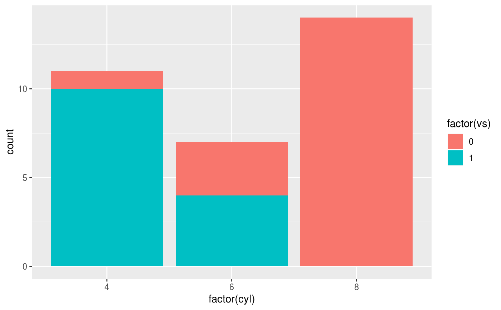
ggplot(mtcars, aes(factor(cyl), fill = factor(vs))) +
geom_bar(position = "fill")
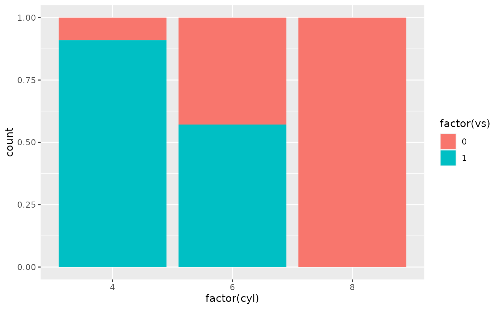
ggplot(diamonds, aes(price, fill = cut)) +
geom_histogram(binwidth = 500)
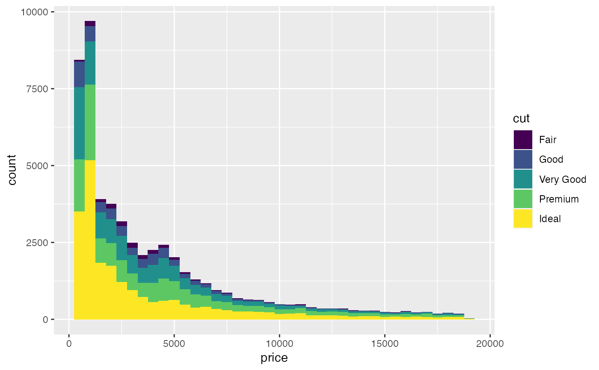
ggplot(diamonds, aes(price, fill = cut)) +
geom_histogram(binwidth = 500, position = "fill")
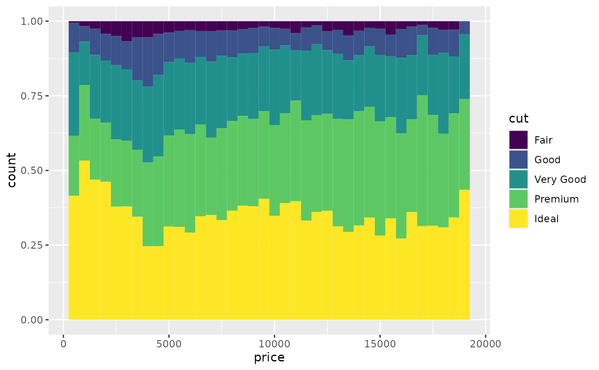
# Stacking is also useful for time series
set.seed(1)
series <- data.frame(
time = c(rep(1, 4),rep(2, 4), rep(3, 4), rep(4, 4)),
type = rep(c('a', 'b', 'c', 'd'), 4),
value = rpois(16, 10)
)
ggplot(series, aes(time, value)) +
geom_area(aes(fill = type))
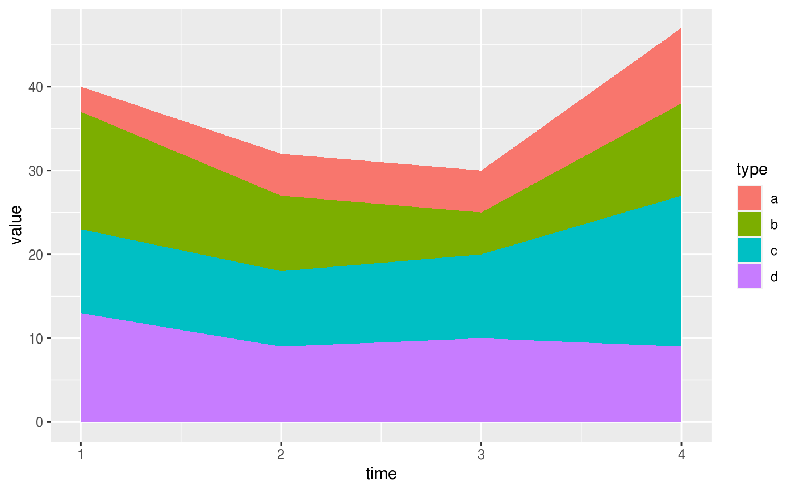
# Stacking order ------------------------------------------------------------
# The stacking order is carefully designed so that the plot matches
# the legend.
# You control the stacking order by setting the levels of the underlying
# factor. See the forcats package for convenient helpers.
series$type2 <- factor(series$type, levels = c('c', 'b', 'd', 'a'))
ggplot(series, aes(time, value)) +
geom_area(aes(fill = type2))
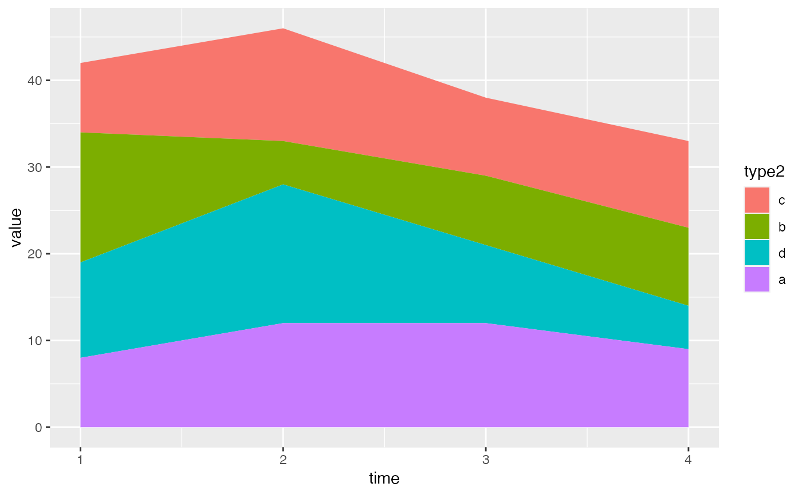
# You can change the order of the levels in the legend using the scale
ggplot(series, aes(time, value)) +
geom_area(aes(fill = type)) +
scale_fill_discrete(breaks = c('a', 'b', 'c', 'd'))
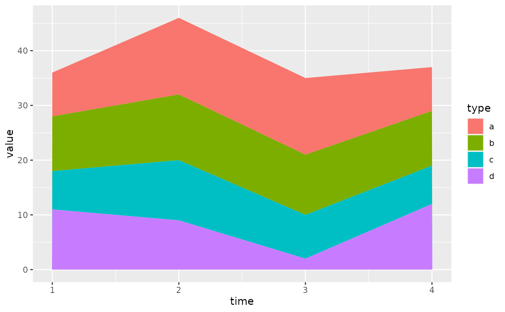
# If you've flipped the plot, use reverse = TRUE so the levels
# continue to match
ggplot(series, aes(time, value)) +
geom_area(aes(fill = type2), position = position_stack(reverse = TRUE)) +
coord_flip() +
theme(legend.position = "top")
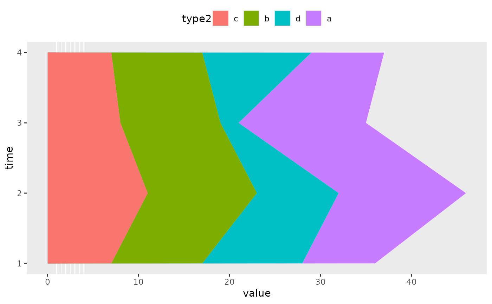
# Non-area plots ------------------------------------------------------------
# When stacking across multiple layers it's a good idea to always set
# the `group` aesthetic in the ggplot() call. This ensures that all layers
# are stacked in the same way.
ggplot(series, aes(time, value, group = type)) +
geom_line(aes(colour = type), position = "stack") +
geom_point(aes(colour = type), position = "stack")
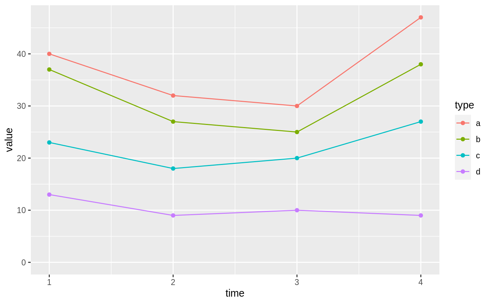
ggplot(series, aes(time, value, group = type)) +
geom_area(aes(fill = type)) +
geom_line(aes(group = type), position = "stack")
# You can also stack labels, but the default position is suboptimal.
ggplot(series, aes(time, value, group = type)) +
geom_area(aes(fill = type)) +
geom_text(aes(label = type), position = "stack")
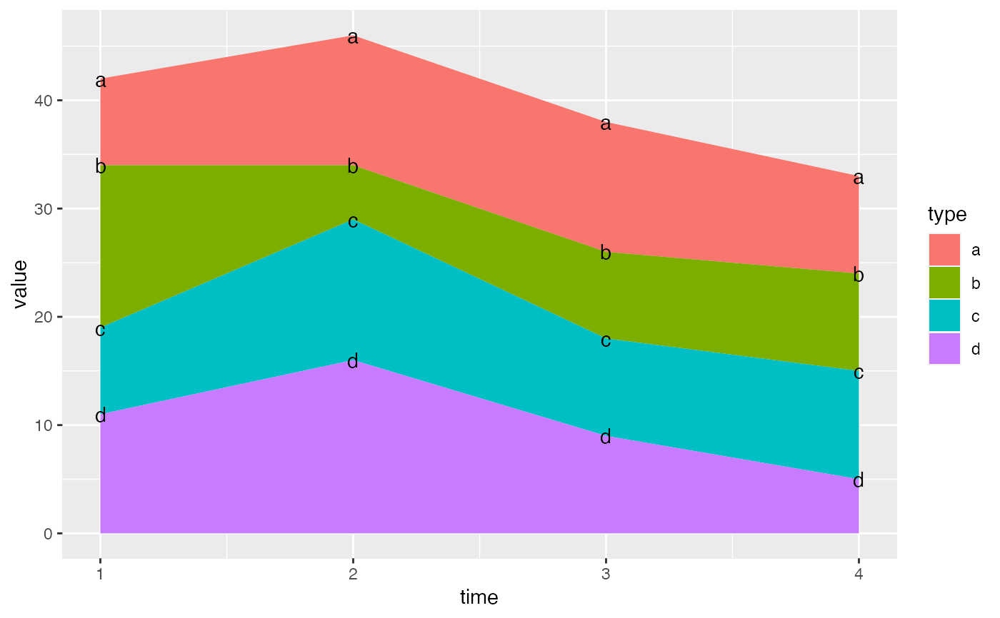
# You can override this with the vjust parameter. A vjust of 0.5
# will center the labels inside the corresponding area
ggplot(series, aes(time, value, group = type)) +
geom_area(aes(fill = type)) +
geom_text(aes(label = type), position = position_stack(vjust = 0.5))
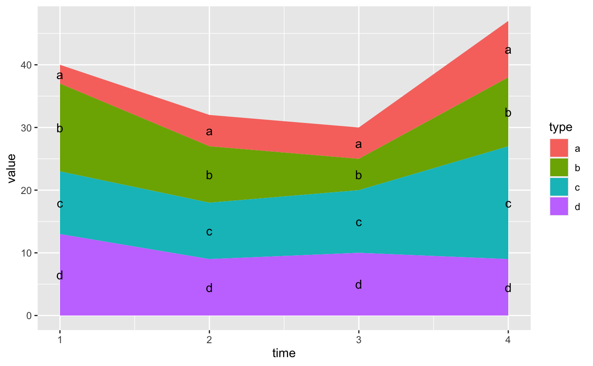
# Negative values -----------------------------------------------------------
df <- tibble::tribble(
~x, ~y, ~grp,
"a", 1, "x",
"a", 2, "y",
"b", 1, "x",
"b", 3, "y",
"b", -1, "y"
)
ggplot(data = df, aes(x, y, group = grp)) +
geom_col(aes(fill = grp), position = position_stack(reverse = TRUE)) +
geom_hline(yintercept = 0)
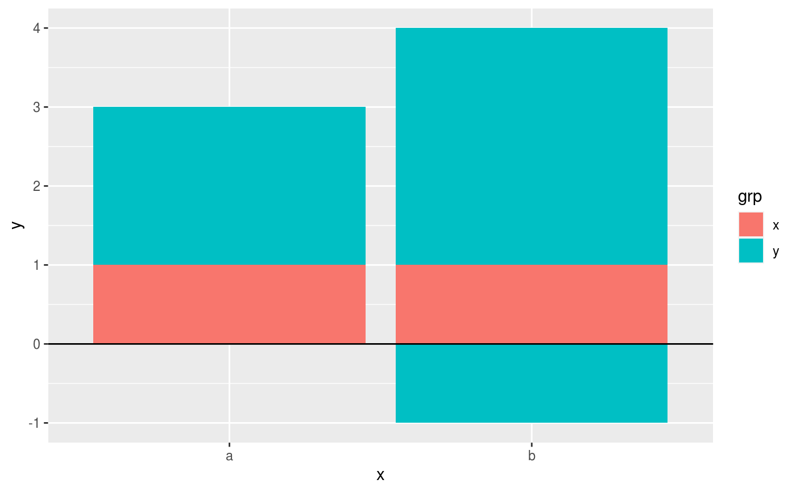
ggplot(data = df, aes(x, y, group = grp)) +
geom_col(aes(fill = grp)) +
geom_hline(yintercept = 0) +
geom_text(aes(label = grp), position = position_stack(vjust = 0.5))
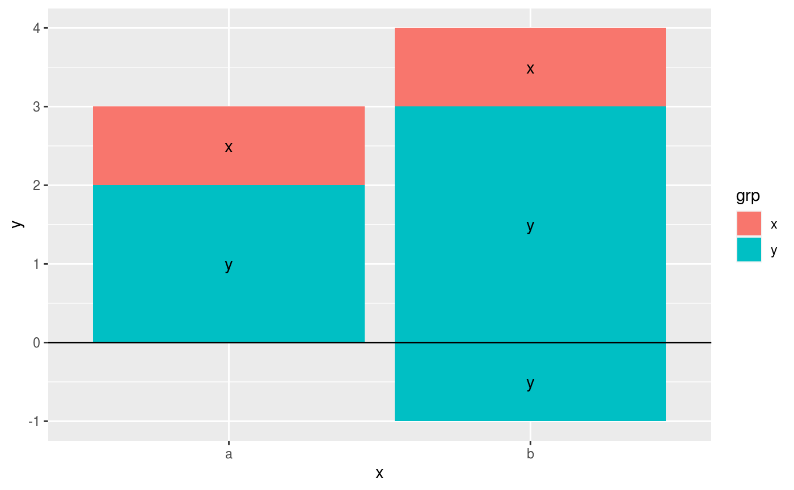